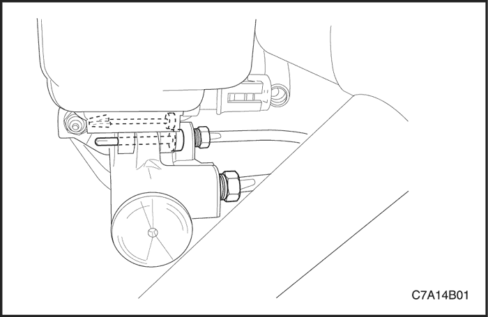
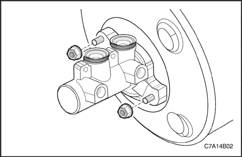
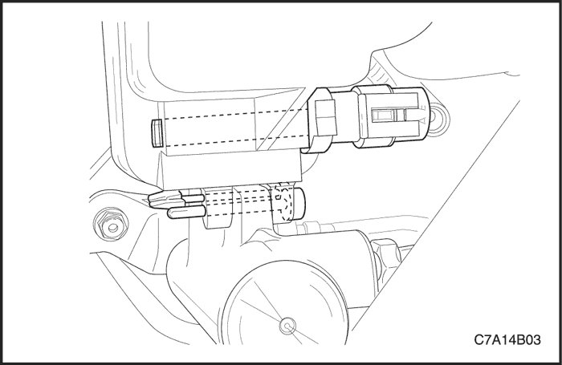
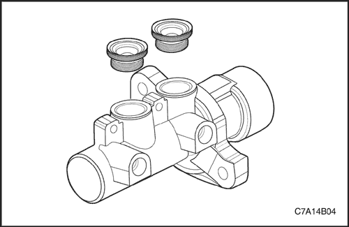

SECCIÓN 4B
CILINDRO MAESTRO
ESPECIFICACIONES
Especificaciones de apriete de la sujeción
| Aplicación | N•m | Árbol de transmisión izquierdo | Articulación |
| Tuercas de fijación del cilindro maestro | 13 | - | 115 |
| Rácores de tubo de freno del cilindro maestro | 16 | 12 | - |
MANTENIMIENTO Y REPARACIÓN
servicio con vehículo en marcha



Conjunto de cilindro maestro
Procedimiento de desmontaje
- Extraiga los pasadores que conectan el depósito de líquido de frenos al cilindro maestro y retire el depósito del cilindro maestro.
- Desmonte los rácores de los tubos de freno del cilindro maestro.
- Tape las aberturas del tubo de freno y del depósito de líquido de frenos para evitar la pérdida de líquido o su contaminación.

- Quite las tuercas que unen el cilindro maestro y el servofreno.
- Extraiga el cilindro maestro y purgue el líquido de frenos.
procedimiento de montaje
- Monte el cilindro maestro en el servofreno.
Apretar
Apriete las tuercas de fijación del cilindro maestro hasta 13 N•m (115 lb-pulg.).
- Retire los tapones de las aberturas.
- Monte los rácores de los tubos de freno al cilindro maestro.
Apretar
Apriete los rácores de los tubos de freno hasta 16 N• m (12 lb-pie).
- Coloque los pasadores que unen el depósito de líquido de frenos y el cilindro maestro.
- Añada líquido de frenos.
- Compruebe si hay fugas.
- Vuelva a comprobar el nivel de líquido de frenos.
- Purgue el sistema de frenos. Consulte la Sección 4A, Frenos hidráulicos.

Depósito de líquido de frenos
Procedimiento de desmontaje
- Retire los pasadores que unen el depósito de líquido de frenos y el cilindro maestro y extraiga el sensor de nivel de líquido presionando su extremo.
- Desmonte el depósito del cilindro maestro.
- Tapone el depósito de líquido de frenos para evitar pérdida de líquido o su contaminación.

procedimiento de montaje
- Lubrique los retenes nuevos del depósito de líquido de frenos con líquido de frenos limpio.
- Coloque los retenes del depósito de líquido de frenos en el cuerpo del cilindro maestro.
- Coloque los pasadores que unen el depósito de líquido de frenos y el cilindro maestro, así como el sensor de nivel de líquido.
- Añada líquido de frenos.
- Levante y apoye el vehículo adecuadamente.
- Purgue el sistema de frenos. Consulte la Sección 4A, Frenos hidráulicos.
- Baje el vehículo.
DESCRIPCIÓN GENERAL Y FUNCIONAMIENTO DEL SISTEMA
Cilindro maestro
El cilindro maestro está diseñado para su empleo en un sistema dividido diagonalmente. El pistón primario acciona un freno delantero y otro freno trasero, diagonalmente opuesto al primero. El pistón secundario acciona los otros frenos delantero y trasero diagonalmente opuestos. El cilindro maestro incorpora las funciones de un cilindro maestro doble estándar, además de un indicador de nivel bajo de líquido.
Aviso: No use aire comprimido de taller con aceite en su contenido en las piezas del sistema de frenos porque podría dañar las piezas de goma.
- Sustituya todos los componentes incluidos en los kits de reparaciones utilizados para reparar este cilindro maestro.
- Lubrique las piezas de goma con líquido de frenos limpio para facilitar su montaje.
- Si se desmonta o se desconecta cualquier componente del sistema hidráulico, puede resultar necesario tener que purgar la totalidad o una parte del sistema de frenos. Consulte la Sección 4A, Frenos hidráulicos.
- Los valores de los pares de apriete especificados son para elementos de sujeción secos y sin lubricar.
- Efectúe todas las labores de reparación en un banco limpio y libre de todo resto de aceite mineral.
Sensor de nivel de líquido
El depósito del cilindro maestro va provisto de un sensor de nivel del líquido de frenos. El sensor activará la luz del freno cuando el nivel de líquido sea bajo. La palanca del freno de estacionamiento también activa luz del freno, que se enciende en la prueba de lámparas cuando se gira la llave de contacto a la posición ON y el motor no está en marcha. Para realizar un diagnóstico de la luz de freno, consulte la
Sección 4A, Frenos hidráulicos.